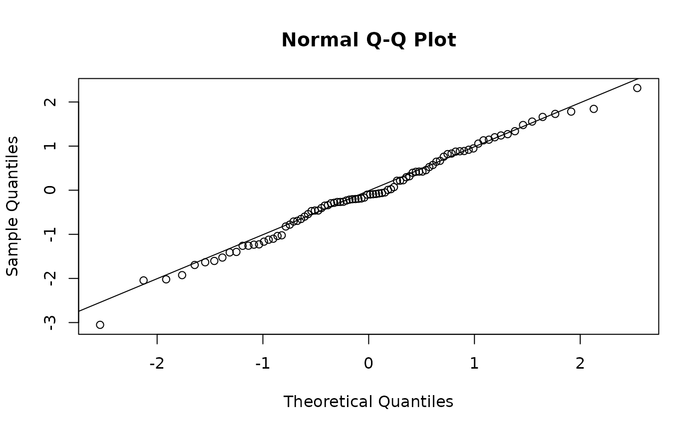

Posterior draws of the residuals of a fitted mvgam model, of two
types:
"quantile"(default): randomised quantile residuals (Dunn and Smyth 1996), also called Dunn-Smyth or PIT residuals. Each observation passes through the distribution function of its predictive distribution, then through the standard normal quantile function. Under a correctly specified model the residuals are independent N(0, 1) draws for any response family."ordinary": the predictive error,yminus aposterior_predict.mvgam()draw, per draw.
In sample, both types compare each observation with predictions that
condition on the latent trend state the model inferred at that time,
the state hindcast.mvgam() returns. For newdata the fit has no
such state. The predictions then use the covariate part of the
model, without the trend's innovations. Passing
process_error = TRUE adds them. pp_check.mvgam() and
predictive_error.mvgam() use the same predictions.
Pearson residuals are not supported. A Pearson residual of a count or a bounded response is skewed and discrete even under a correctly specified model.
Arguments
- object
A fitted
mvgamobject.- newdata
Optional
data.frameto compute residuals on. Defaults to the training data.- type
Character. Either
"quantile"(default) or"ordinary".- ndraws
Positive integer specifying number of posterior draws to use. NULL (default) uses all available draws.
- draw_ids
Optional integer vector selecting a subset of posterior draw indices to use. NULL (default) uses all draws (subject to
ndraws).- summary
Logical.
TRUE(the default) returns a summary per observation.FALSEreturns the residual draws.- robust
Logical. If
FALSE(the default), uses mean and standard deviation for summaries. IfTRUE, uses median and median absolute deviation (MAD).- probs
Two probabilities for the lower and upper quantile columns of the summary. Default
c(0.025, 0.975), a 95% interval.- ...
Further arguments of
posterior_predict.mvgam(), such asresporre_formula.
Value
With summary = FALSE, an [ndraws, nobs] matrix of residual
draws. A continuous family on the empirical route has one interval
per observation. Its rows are then identical. With summary = TRUE,
an [nobs, 2 + length(probs)] matrix. Its columns are Estimate
(the mean, or the median with robust = TRUE), Est.Error (the
standard deviation, or the MAD) and one quantile per probs.
Details
Each draw places an observation in a PIT interval
[lower, upper]. The residual is qnorm(u) for a u drawn
uniformly from that interval. Two routes give the interval.
The analytic route evaluates the family's distribution function at
each draw's parameters. A discrete family gives the interval of the
observed atom, [F(y - 1), F(y)]. A continuous family gives the
point F(y). A tweedie() zero gives [0, F(0)]. Censored rows
span their censoring interval. A truncated model renormalises over
its truncation bounds. log_lik.mvgam() takes its density from the
same parameterisation. The route covers gaussian, student,
asym_laplace, lognormal, gamma, weibull, exponential,
beta, bernoulli, binomial, beta_binomial, poisson,
negbinomial, geometric, com_binomial(), beta_nb(),
tweedie(), the ordinal families, and the multivariate mvn(),
mvt(), diri(), multi() and categ(). A composition family uses
the marginal of one component: a Beta for diri(), a Binomial
against the site's own total for multi() and a Bernoulli for
categ().
Every other family takes the empirical route of DHARMa (Hartig 2024),
among them the zero-inflated, hurdle and mixture families, occ()
and nmix(). The bounds are mean(yrep < y) and mean(yrep <= y)
over the pooled posterior_predict.mvgam() draws. The pooled
predictive carries the posterior uncertainty in the latent state.
Its residuals are narrower than N(0, 1). A QQ-plot of them is
conservative.
The PIT value is clamped to [eps, 1 - eps], with
eps = .Machine$double.eps, to keep the residual finite. The clamp
bounds a residual at about +/-8.13. On the analytic route one draw
can place an observation beyond that bound. Such isolated values
describe that draw. A misfit shifts the residual across most draws.
The empirical route reaches the clamp whenever an observation lies
outside every simulated value. With few draws that happens often.
Use ndraws >= 500 there, the default of the residual histograms
and ribbons of pp_check.mvgam().
Multivariate families (mvn(), mvt(), diri())
Each row of a unit gets its own residual. Residuals of mvn() and
mvt() condition on the latent factor scores and test the
observation model. They stay N(0, 1) when the fit has too few
factors. active_factors() and residual_cor.mvgam() judge the
number of factors.
A diri() residual is the exact marginal of one component,
Beta(alpha_j, alpha_0 - alpha_j). Each is N(0, 1) on its own.
Because the shares of a unit sum to one, the residuals of a unit of
K species are negatively dependent, with K - 1 degrees of
freedom. With K = 2 the two residuals are exactly antithetic.
Judge a QQ-plot or an ACF at the unit grain.
Closure-unit families (nmix(), occ())
Visits within a closure unit (site by season) share the latent state,
N for nmix() and z for occ(). The visits are independent
given that state, but dependent marginally. Because residuals per
visit would carry that dependence into every diagnostic,
residuals() returns one residual per closure unit. The observed
counts or detections are summed within each unit. The visit-level
posterior_predict.mvgam() draws are summed the same way. Columns
(summary = FALSE) or rows (summary = TRUE) are labelled by the
unit's grouping values joined with _.
Each draw simulates the latent state from lambda or psi without
conditioning on the unit's detection history. The residuals then
test the model across the population of units.
predict(type = "latent_state") gives the state given each unit's
detection history.
Under occ() a unit sum takes values in 0, ..., n_rep. With few
visits the empirical PIT has coarse support. QQ-plot tails then look
heavier than N(0, 1) under a correctly specified model. A
once-per-session warning is raised when any unit has 4 or fewer visits.
Compare QQ-plots with envelopes simulated from N(0, 1) in that case.
References
Dunn, P. K. and Smyth, G. K. (1996). Randomized quantile residuals. Journal of Computational and Graphical Statistics, 5(3), 236-244.
Hartig, F. (2024). DHARMa: Residual diagnostics for hierarchical (multi-level / mixed) regression models. R package. https://CRAN.R-project.org/package=DHARMa
See also
augment.mvgam(), posterior_predict.mvgam(),
pp_check.mvgam()
Other model checking:
mvgam_diagnostics,
plot.mvgam(),
pp_check.mvgam()
Examples
# \dontrun{
set.seed(13)
simdat <- sim_mvgam(family = poisson(), n_series = 1L,
n_timepoints = 120L, trend_model = AR())
mod <- mvgam(y ~ s(x, k = 5), trend_formula = ~ AR(p = 1),
data = simdat$data_train, family = poisson(),
chains = 2, silent = 2)
#> Warning: 5 of 2000 (0.0%) transitions ended with a divergence.
#> See https://mc-stan.org/misc/warnings for details.
# Quantile residuals summarised per observation
r <- residuals(mod)
head(r)
#> Estimate Est.Error Q2.5 Q97.5
#> [1,] 0.04305444 0.6276094 -1.2293330 1.2065680
#> [2,] 0.43102182 0.9100175 -1.4328467 2.1089368
#> [3,] 0.08381852 0.7538234 -1.3775664 1.5728609
#> [4,] -1.66884248 0.6492969 -2.9454988 -0.3349742
#> [5,] 0.74917410 0.7539337 -0.7791357 2.2124208
#> [6,] 0.11081097 0.7590387 -1.4080932 1.5538332
# One draw of the residuals should look like N(0, 1) draws
r1 <- residuals(mod, summary = FALSE, draw_ids = 1)
qqnorm(r1[1, ])
qqline(r1[1, ])

# Next: plot(mod, type = "residuals") draws the QQ-plot, ACF and
# residuals against fitted values over many draws. A series observed
# at unevenly spaced times gets a semivariogram in place of the ACF
# }